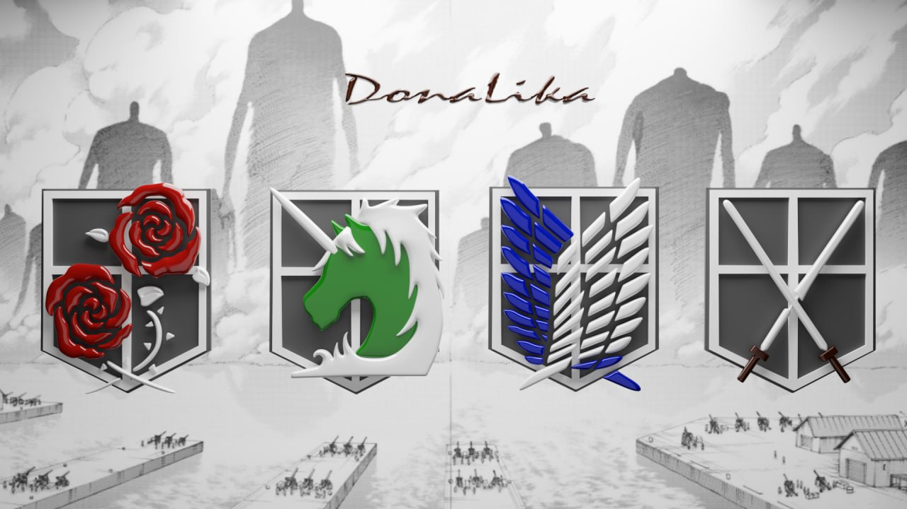
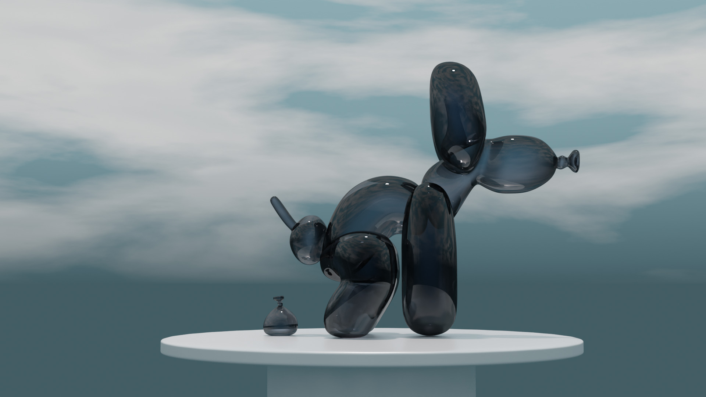
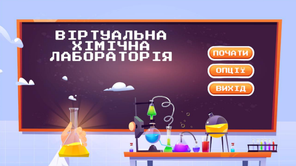
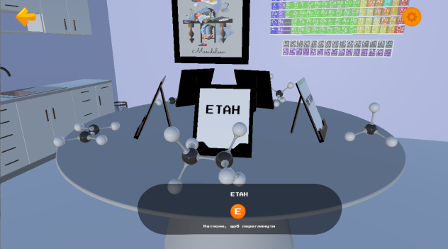

Alina Suchok

Про мене
Студентка спеціальності 121 «Інженерія програмного забезпечення» КАІ. Захоплена цифровим мистецтвом і практичним досвідом у побудові 3D-моделей.
- Повний пайплайн 3D: моделювання та скульптинг, UV-розгортка та текстурування, рендеринг (Cycles, EEVEE)
- Розробка ігор: прототипування інтерфейсів у Figma, реалізація логіки на C# у Unity
Освіта
2024 — зараз: Державний університет «Київський авіаційний інститут»
Бакалавр · Спеціальність 121 «Інженерія програмного забезпечення»
2020 — 2024: Фаховий коледж інженерії НАУ
Фаховий молодший бакалавр · ОПП «Інженерія програмного забезпечення»
Курси та сертифікати (Udemy)
- Blender Foundations
- Modéliser un personnage de jeu vidéo
- Maya — Design e Criação de Personagens 3D
- Unity Environment Design
Технічний стек
- Графіка та 3D: Blender, Maya, ZBrush, Substance Painter, Designer
- Програмування: C#, C++, Java, JavaScript · Git, GitHub, Unity
- Дизайн: Figma, Photoshop, Illustrator
Роботи
3D-арт та рендери

Attack on Titan Badges — Blender, PBR-текстури

Glass Balloon Dog — Cycles render, Refraction material
Кваліфікаційна робота


Модуль симуляції атомної взаємодії: Unity & C# (логіка), Blender (моделі атомів), SQLite (база даних елементів).
Контакти
- Телефон
- +380 96 331 2901
- alina.suchok00@gmail.com
- linkedin.com/in/alina-suchok
- Behance
- behance.net/c4abb248